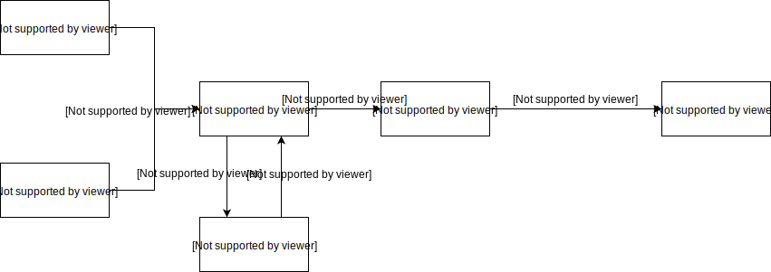

| $:img(content=slide, number=1) | $:text(content=slide, number=1) |
OpenWeek 2017
Développement de plugins pour ICTV v2
https://github.com/OpenWeek/ictv-pluginsMaxime Piraux - maxime.piraux@student.uclouvain.be
Qu'est ce que ICTV ?
- ICTV est un système de gestion de contenu pour l'affichage dynamique.
- ICTV vous permet de créer et modifier du contenu qui sera affiché sur un réseau d'écrans.
- L'interface d'ICTV est entièrement basée sur le web. Tout depuis la gestion du contenu jusqu'à sa reproduction sur les écrans est effectué dans un navigateur.
- ICTV est facilement extensible grâce à un système de plugins simple et puissant.
Pourquoi une version 2 ?
- Affichage limité à des images statiques
- Pas de vidéos ou d'images animées
- Diaporama inerte, aucune transition dynamique possible
- Interface trop austère
- Opportunité de remise à plat de la conception du logiciel
Trois concepts clés
Plugins
Tout contenu provient d'un plugin.
- Un plugin peut être un programme automatisé.
- E.g. un programme qui crée du contenu à partir d'un flux RSS.
- Interaction plus large avec les utilisateurs possible à travers l'intégration d'une sous-application web propre au plugin dans ICTV.
- La configuration des plugins se fait via l'interface web d'ICTV.
Plugins
Il existe déjà des plugins utiles:
- editor est un éditeur web permettant de créer des diaporamas.
- embed permet d'intégrer des pages web dans le système.
- rss permet d'extraire et de transformer des flux RSS en diaporamas.
- cal crée des annonces sur base d'événements de calendrier.
- img-grabber extrait des images de pages web.
Channels
- Elles permettent d'organiser le contenu.
- Chaque channel contient un type d'information thématique.
- Chaque channel est une instance, une paramétrisation, d'un plugin.
- Les channels peuvent être publiques ou restreintes à certains utilisateurs.
Screens
- Une sortie affichant du contenu
- Peut être physique, i.e. un écran, ou virtuel, i.e. une page web.
- Les écrans diffusent le contenu des channels auxquelles ils sont abonnés.
- Les abonnements d'un écran vont déterminer le contenu qui y sera affiché.
Contenu
- Un diaporama de slides utilisant reveal.js
- Utilise les nombreuses possibilités offertes par HTML5 et CSS3.
- Compositions complexes, GIFs, vidéos et images de fond sont possibles.
Technologies utilisées
- Coté client
-
Coté serveur
- Python 3.5+
- web.py comme framework web pour Python.
Intermède
Votre mission
Imaginer un nouveau plugin utile pour ICTV, pas nécessairement lié à l'INGI.
Plus il peut être utilisé dans de nombreuses situations, plus son intérêt est grand.
Un peu d'inspiration
Actuellement, il n'y a pas d'interactions possibles pour le public regardant les écrans.
Un plugin de sondage permettrait d'interroger les audiences et d'interagir avec ICTV.
Python
- Démarré en 1990 par Guido Van Rossum
- Aujourd'hui à la version 3.6 (décembre 2016)
- Langage intreprété, multi-paradigme et multiplateformes
- Selon PYPL
Python grew the most in the last 5 years (8.7%)

Python
- Syntaxe élégante
- Conception axée vers la simplicité d'utilisation, sans compromettre la maintenabilité
- Interpréteur intégré pour tester facilement des bouts de code
- Gestion automatique de la mémoire
- Librairie standard très riche
- Intégration de modules en C/C++ possible
Paradigmes & typage
- Paradigme procédural
- Paradigme orienté objet
- Paradigme fonctionnel
- Typage dynamique, comme JavaScript
String string = "Hello, world!";string = "Hello, world!"
- Typage fort, comme Java mais avec peu de conversions implicites
String result = "Hello, world!" + 2;result = "Hello, world!" + str(2)
Une seule source d'information: la documentation officielle https://docs.python.org
Le tutoriel officielTypes
Toute valeur est un objet
- Pour les nombres:
intetfloat - Pour les chaînes de caractères:
str''et""pour les délimiter.
- Pour les booléens:
boolTrueetFalse
- Utilisé principalement pour des conversions explicites
str(2)équivaut à"2"équivaut à'2'
Noneest l'équivalent denullen Java.
Variables
- Déclarées et initialisées en une instruction.
- Au moins une lettre, suivie de chiffres, lettres ou le caractère
_ - La convention de nomage est le snake case, e.g.
nom_de_variable - Pas d'opérateur pour déclarer une variable, une première assignation dans le contexte courant compte comme une déclaration.
- Les variables commençant par
_indiquent qu'elles sont privées. - L'opérateur
delpermet de supprimer une variable du contexte. - Pas de type explicitement associé à une variable
Strings
word = "Python"- Répété avec
*, concatené avec+ - Peut être indexé:
+---+---+---+---+---+---+ | P | y | t | h | o | n | +---+---+---+---+---+---+ 0 1 2 3 4 5 6 -6 -5 -4 -3 -2 -1word[2]vaut't'
- Peut être découpé (sliced):
>>> word[0:2] # characters from position 0 (included) to 2 (excluded) 'Py' >>> word[2:5] # characters from position 2 (included) to 5 (excluded) 'tho' - Les strings sont immutables.
Lists & tuples
squares = [1, 4, 9, 16, 25]- Elle peut être indexée et découpée.
- Les listes sont mutables.
- Elles peuvent contenir des objet de type différents.
coordinates = (4.2, 3.6)- Indexable, découpable
- Immutable
- Unpacking:
x, y = coordinates
Sets & dictionary
odd_numbers = {1, 3, 5, 7, 9}
capitals = {'Belgium': 'Brussels', 'France': 'Paris', 'Canada': 'Ottawa'}2 in odd_numberséquivaut àFalsecapitals['Canada']équivaut à'Ottawa''France' in capitalséquivaut àTrue- Set et dict sont mutables.
Valeur de vérité
Sont considéré comme faux:
None- zéro pour tout type numérique
- Une list, tuple, set, string ou dict vide
- Tout objet dont la classe définit la méthode
__bool__ou__len__si elle renvoie0ouFalse
Toute autre valeur est considérée comme vraie.
Opérateurs & comparateurs
- Opérateurs booléens:
and,oretnot - Comparateurs:
<,<=,>,>=,==,!=,isetis not
Syntaxe
Python n'utilise pas d'accolades pour grouper des blocs d'instructions ensemble. L'indentation est sémantique.
Java
if (x <= y)
x++;
y--;
z++;
Python
if x <= y:
x++
y--
z++
Cela apporte moins d'erreurs et beaucoup plus de clarté.
Structures de contrôle
if True:
pass
elif False:
pass
else:
pass
while i > 0:
pass
for i in range(10):
pass
Fonctions
def fib(n, a=0, b=1):
"""Print a Fibonacci series up to n."""
while a < n:
print(a, end=' ')
a, b = b, a+b
print()
fib(10) # equiv fib(n=10)
def cheeseshop(kind, *arguments, **keywords): print("-- Do you have any", kind, "?") print("-- I'm sorry, we're all out of", kind) for arg in arguments: print(arg) print("-" * 40) for kw in keywords: print(kw, ":", keywords[kw])>>> cheeseshop("Limburger", "It's very runny, sir.", ... "It's really very, VERY runny, sir.", ... shopkeeper="Michael Palin", ... client="John Cleese", ... sketch="Cheese Shop Sketch")-- Do you have any Limburger ? -- I'm sorry, we're all out of Limburger It's very runny, sir. It's really very, VERY runny, sir. ---------------------------------------- shopkeeper : Michael Palin client : John Cleese sketch : Cheese Shop Sketch
Classes
class Coordinate(object):
def __init__(self, x, y):
self.x = x
self.y = y
def dist_to_origin(self):
return sqrt(x ** 2 + y ** 2)
point = Coordinate(1, 2)
point.x = 4
print(point.dist_to_origin())
Modules et import
Un module est un fichier python importable depuis d'autres modules.
import math
math.sqrt(4)
from math import sqrt
sqrt(4)
from math import sqrt as sq
sq(4)
Un fichier __init__.py permet a Python de considérer son dossier parent comme un module.
if __name__ == "__main__":
# execute only if run as a script
main()Gestion des exceptions
try:
raise ValueError('Oops')
except ValueError as e:
print('An exception flew by!')
raise
Plugins dans ICTV
Execution
Slides & capsules
class PluginSlide(metaclass=ABCMeta):
@abstractmethod
def get_duration(self):
pass
@abstractmethod
def get_content(self):
pass
@abstractmethod
def get_template(self):
pass
class PluginCapsule(metaclass=ABCMeta):
@abstractmethod
def get_slides(self):
pass
@abstractmethod
def get_theme(self):
pass
Contenu d'une slide
{
'[field-type]-[field-number]': {'[input-type]': '[field-data]'},
...
}
field-type
- title
- subtitle
- text
- logo
- image
- background
input-type
title,subtitle,text:text
logo,image:- src
- qrcode
background:- src
- size
- qrcode
Renderer
Transforme la représentation abstraite d'une slide en HTML pour reveal.js via un template.
html
$def with (slide, theme)
$:logo(content=slide, number=1)
$:logo(content=slide, number=2)
$:title(content=slide, number=1)
$:subtitle(content=slide, number=1)
{
'title-1': {'text': "Awesome title"},
'subtitle-1': {'text': "Subtile subtitle"},
'text-1': {'text': "Very long textual text here"},
'image-1': {'src': "img/michelfra.gif"},
'logo-1': {'src': "ingi.gif"},
'logo-2': {'src': "ucl.gif"}
}
Anatomie
ictv
└── plugins
└── img-grabber
├── __init__.py
├── config.yaml
└── img-grabber.py
config.yamldéfinit la configuration nécessaire a une instance du plugin.img-grabber.pycontient une fonctionget_content().__init__.pypermet a Python de considérer ce dossier comme un module.
Fichier de configuration
plugin:
webapp: no
static: no
description: |
This plugin embeds an image and a text
as legend in a simple way.
It uses CSS selector to specify which content
to grab from the specified page.
dependencies:
- pyquery
channels_params:
url:
name: 'URL of the page'
placeholder: 'Url format'
type: string
default: 'http://apod.nasa.gov/apod/astropix.html'
image_selector:
name: 'Image CSS selector'
placeholder: 'CSS selector'
type: string
default: 'img'
src_attr:
name: 'Attribute holding the image source url'
placeholder: 'HTML attribute'
type: string
default: 'src'
text_selector:
name: 'Text CSS selector'
placeholder: 'CSS selector'
type: string
default: 'center>b'
alternative_text:
name: 'Alternative text if a text cannot be found with the selector above'
placeholder: 'Plain text'
type: string
default: ''
duration:
name: 'Capsule duration in seconds'
placeholder: 'Capsule duration in seconds'
type: int
default: 10
min: 1
qrcode:
name: 'Embed the url of the page as a QR code'
type: bool
default: no
Slide
class ImgGrabberSlide(PluginSlide):
def __init__(self, img_src, text, duration, qrcode):
self._duration = duration
self._content = {'background-1': {'src': img_src, 'size': 'contain'},
'text-1': {'text': text}}
if qrcode:
self._content['image-1'] = {'qrcode': qrcode}
self._has_qr_code = qrcode is not None
def get_duration(self):
return self._duration
def get_content(self):
return self._content
def get_template(self):
return 'template-background-text-qr'
Capsule
class ImgGrabberCapsule(PluginCapsule):
def __init__(self, img_src, text, duration, qrcode=None):
self._slides = [ImgGrabberSlide(img_src, text, duration, qrcode)]
def get_slides(self):
return self._slides
def get_theme(self):
return None
get_content
def get_content(channel_id):
channel = Channel.get(channel_id)
logger_extra = {'channel_name': channel.name, 'channel_id': channel.id}
logger = get_logger('img-grabber', channel)
url = channel.get_config_param('url')
image_selector = channel.get_config_param('image_selector')
attr = channel.get_config_param('src_attr')
qrcode = channel.get_config_param('qrcode')
if not url or not image_selector or not attr:
logger.warning('Some of the required parameters are empty', extra=logger_extra)
return []
try:
doc = PyQuery(url=url)
except Exception as e:
raise MisconfiguredParameters('url', url, 'The following error was encountered: %s.' % str(e))
img = doc(image_selector).eq(0).attr(attr)
if not img:
message = 'Could not find img with CSS selector %s and attribute %s' % (image_selector, attr)
raise MisconfiguredParameters('image_selector', image_selector, message)
.add_faulty_parameter('src_attr', attr, message)
if img[:4] != 'http' and img[:4] != 'ftp:':
img = '{uri.scheme}://{uri.netloc}/'.format(uri=urlparse(url)) + img
duration = channel.get_config_param('duration') * 1000
text = doc(channel.get_config_param('text_selector')).eq(0).text()
alternative_text = channel.get_config_param('alternative_text')
return [ImgGrabberCapsule(img, text if text else alternative_text, duration,
qrcode=url if qrcode else None)]